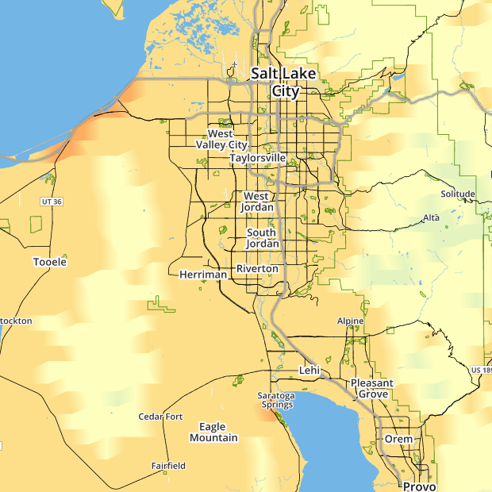
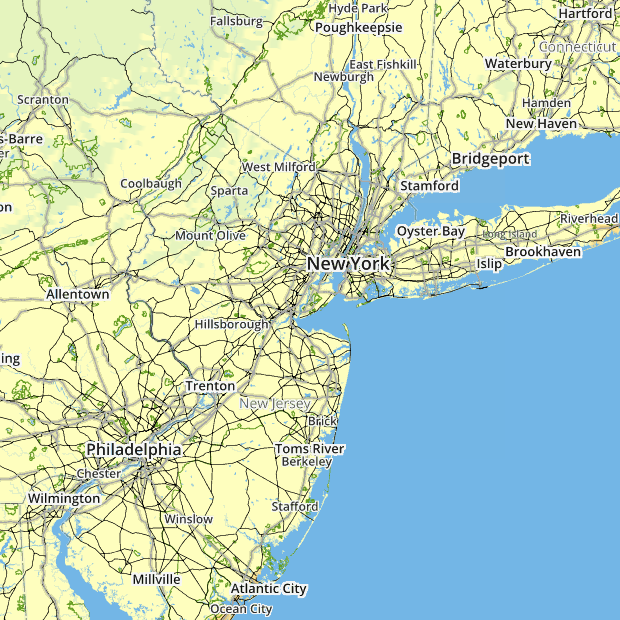
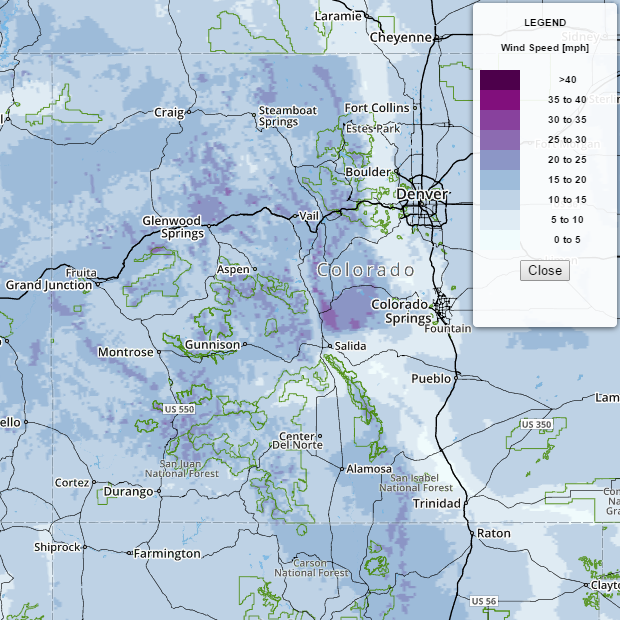

What is Weather-gridGL?
While not yet spun off into a distinct product, this is a workflow/set of examples to show two things:
1) How to use python to convert data on a latitude/longitude grid into a format that can efficiently be stored and
transferred, as well as one that is compatible with WebGL visualization techniques.
2) How to use WebGL, Javascript, and LeafletJS to display the converted gridded data over a slippy web map.
Why?
A never-ending challenge in designing websites in the field of atmospheric sciences is how to effectively and efficiently overlay gridded model output on an interactive map. A traditional answer to this problem includes generating static map tiles, which require a lot of storage space or extremely efficient pipelines of data transfer. Other methods include computing contours and generating geoJSONs from the data and coordinates, but this requires a lot of time-consuming preprocessing and a great deal of work to style the layers appropriately.
What the weather-gridGL approach does is abstract the data into pre-assigned ranges for visualization, store it in relatively lightweight JSONs that are comprised of single arrays of integers (although I am open to suggestions for even more efficient storage and transfer options), and overlay them on a LeafletJS map.
Simple Example
The simplest example I have put together is just a small domain (Wasatch Front, Utah) chunk of the 2.5km National Digital Forecast Database (NDFD) Grid. This should load quickly on any browser/computer. The simple.py script that is used to create the dataset uses the latitude/longitude grid definitions to create the vertices for the webGL scene. The temperature, relative humidity, wind speed, and accumulated precipitation data comes from grib2 files provided by the National Weather Service. Care is taken when creating the arrays to ensure that the output arrays are in the proper format for having WebGL create a TRIANGLE_STRIP from the grid, best explained here. The data is binned using the variable-specific functions at the top of the simple.py code, with any extreme values (1e20 in the case of NDFD) given the highest index value, so that its color equivalent can be transparent in the eventual visualization.
On the web side of things, a few packages are included, as well as some styling for both the page and for LeafletJS. The two webGL shaders are defined (they can be put in separate GLSL files as well if you'd prefer - and they are quite basic, to be honest), and the map div is established. The latitude/longitude coordinates are also pulled in at page load as they only need to be loaded once. All of the magic is done on the JavaScript side. The map is created using LeafletJS with custom-made Mapbox tiles that serve an important purpose. The style makes landmasses transparent, so that the grids can show through, but which places the labels on top of the grids for geographical reference. The WebGL environment is then created, the color scales are defined for each variable, and data is acquired from the files generated by simple.py using JQuery for Ajax requests. JQuery is by no means mandatory in this, and other frameworks or just native JavaScript can be used to pull in the files.
When the data is acquired, the integer values are converted by the color scale dictionary to RGB values for each point. When new files are loaded (using the 'W' or 'D' keys to change variable), only the colors are updated, not the vertices (which remain the same) for efficiency. When the screen is moved or the zoom is changed, the transform matrix is updated, not the vertices. This is using code from Stanislav Sumbera (@Sumbera) from the Leaflet WebGL Many Points Rendering example.
East Coast Example
This example requires a bit more heavy lifting, but the WebGL should render within 0.1-0.5 seconds. Here we have a chunk of the NDFD grids covering much of the East Coast of the United States. I have added some custom LeafletJS controls including a legend for each of the variable color bars, a time stamp for each forecast period, instructions for the key controls in the bottom left, and the option not just to change variables, but to move forward and backward in time through the forecast periods (note that because of the static nature of the dataset, the forecasts do not update. For a regularly-updating version, go here).
Intermountain West Example
This example is more for those with solid Internet speeds and a decent graphics card - the WebGL should render in about 0.35-1.0 seconds. Here we have a chunk of the NDFD grids covering the Intermountain West region of the United States. All of the controls are identical to the East Coast example. For a regularly-updating version of this website, go here).
Support or Contact
Questions, comments, or suggestions? Contact matt.lammers@utah.edu.